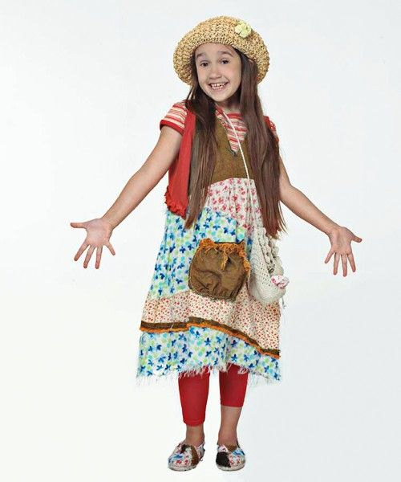

Juveniles

Alelí
Alelí es una de las más chicas del grupo y se destaca por su ternura, espontaneidad y sensibilidad. A lo largo de la historia forma parte del núcleo de chicos que vive distintas aventuras junto al resto de los personajes.
Yeca
Yeca es uno de los chicos más jóvenes de la serie. Tiene una personalidad simpática y cercana, y forma parte de la convivencia cotidiana y de las historias que atraviesan los más chicos.
Monito
Monito integra el grupo de los más chicos. Se caracteriza por su inocencia, humor y compañerismo, aportando momentos más livianos dentro de muchas de las situaciones de la serie.
Cristóbal
Cristóbal es el hijo de Nicolás Bauer. Tiene un papel importante en la vida de Nico y en el vínculo que se construye entre los adultos y los chicos del hogar.
Luz
Luz es una de las chicas más pequeñas del universo de Casi Ángeles. Su historia está ligada a distintos personajes importantes y forma parte del grupo infantil dentro de la serie.